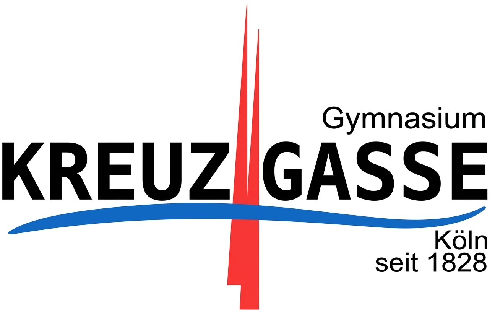

09/2013 – 07/2021

Abitur · General qualification for university entrance
Gymnasium Kreuzgasse · Cologne, Germany
French–German bilingual school with an emphasis on sciences and languages. Final grade: 1.3 (excellent).